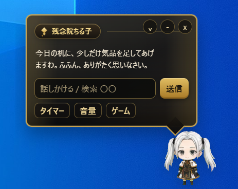
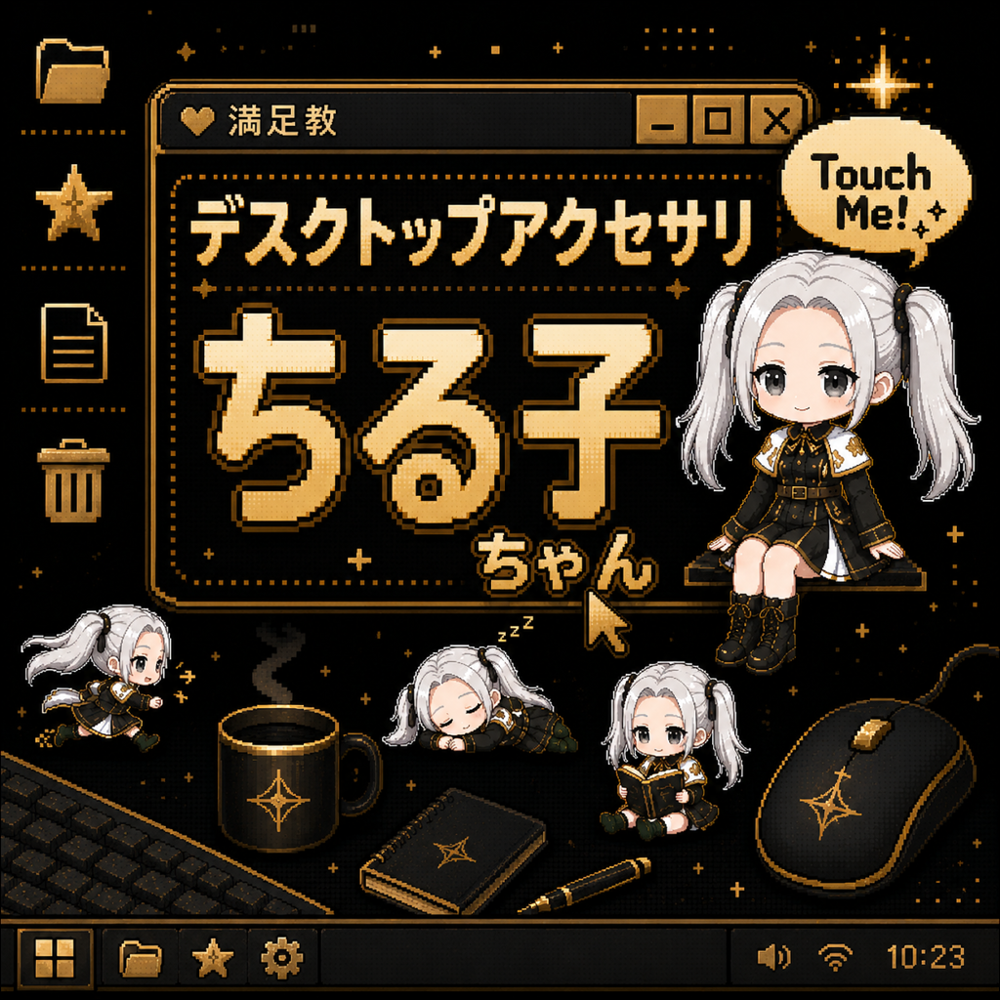
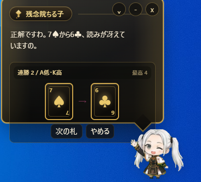
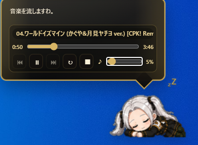
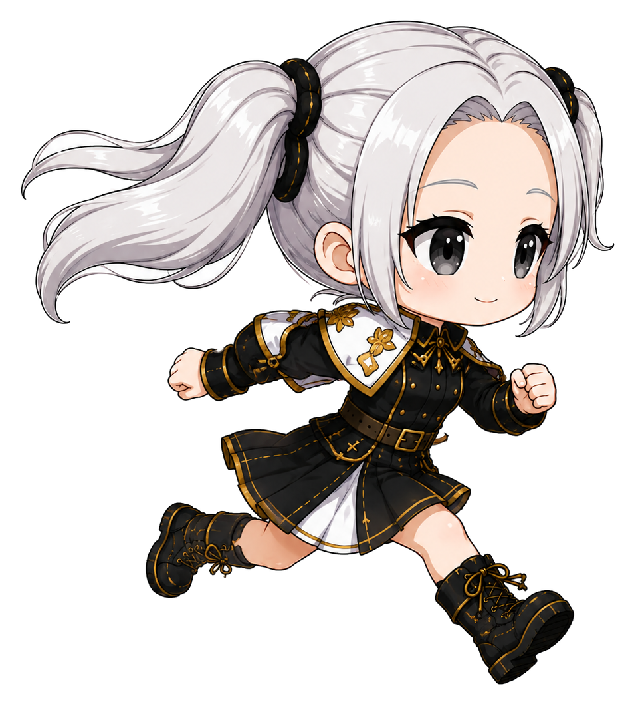
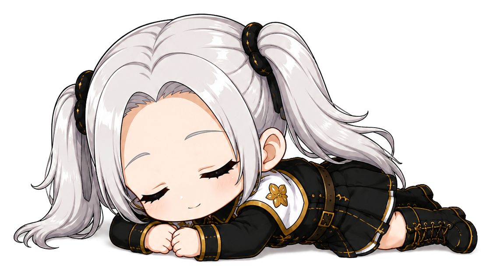
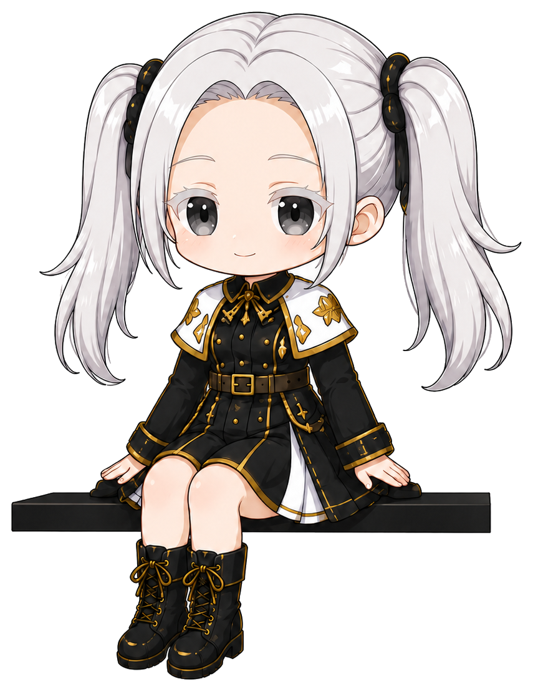

話しかける
画面の片隅から、ちる子がひとこと。作業中のデスクトップが、少しだけにぎやかになります。
Desktop Accessory
PCのすみに、ちる子ちゃんがちょこん。 おしゃべりしたり、遊んだり、音楽を流したり。 あなたの作業時間に、ちいさな癒しをお届けします。
Download デスクトップちる子
What She Does

画面の片隅から、ちる子がひとこと。作業中のデスクトップが、少しだけにぎやかになります。

短い休憩にちょうどいいミニゲーム。ほんの少しの息抜きに、ちる子が付き合ってくれます。

音楽を流している間は、眠るちる子をそっと眺められます。邪魔をしない、かわいい存在感です。
Character
黒と金をまとった、気品といたずら心のある小さな教祖さま。 かわいいのに少しだけ謎めいていて、デスクトップに置いておきたくなる存在です。



Preview
画面のすみっこに常駐して、作業中も休憩中もそばにいてくれます。 ふと目に入るたびに少し楽しくなる、残念院ちる子の小さなPCマスコットです。
Download デスクトップちる子